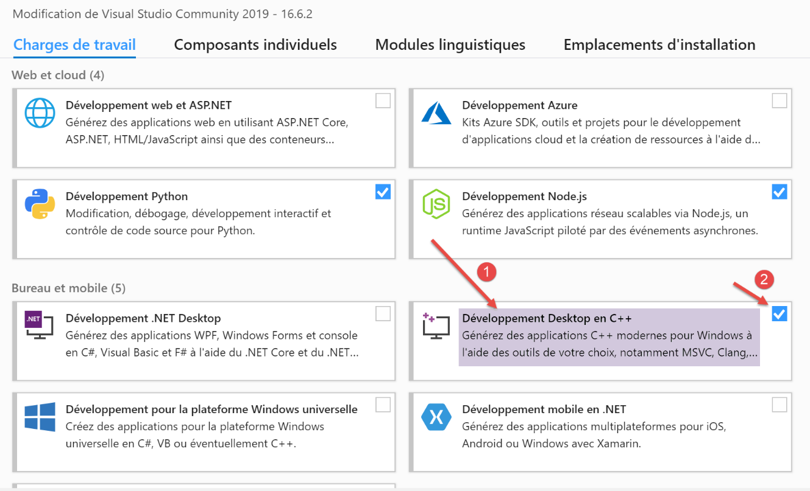
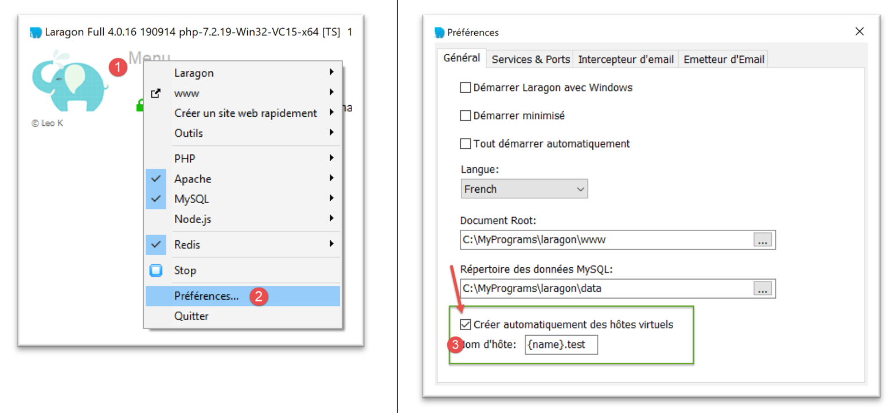
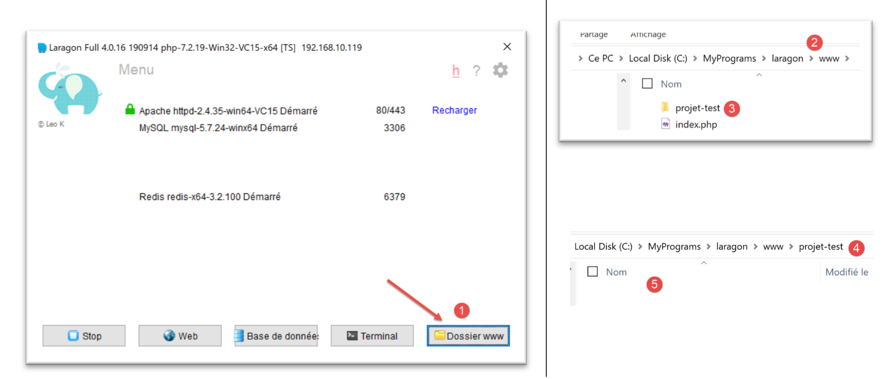
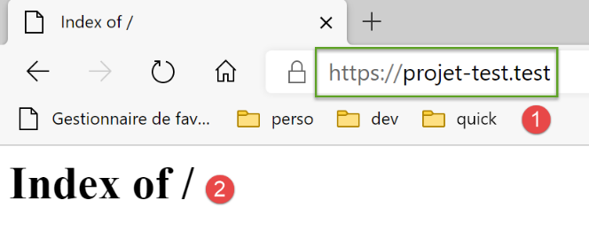

37. تمرين عملي: الإصدار 17

يقدم هذا الإصدار الجديد التغييرات التالية:
- سيتم نقله إلى خادم Apache/Windows؛
- لإجراء هذا النقل، يحتوي الإصدار 17 على جميع التبعيات التي يحتاجها في مجلده [impots/http-servers/12]. لاحظ أن الإصدارات السابقة كانت تسترد تبعياتها من مجلدات مختلفة في جميع أنحاء مشروع [python-flask-2020] بأكمله؛
37.1. نقل تبعيات التطبيق

لاحظ أن إدارة تبعيات التطبيق تتم في البرنامج النصي [syspath]. في الإصدار السابق، كان هذا البرنامج النصي كما يلي:
نحتاج إلى إعادة تحديد موقع جميع التبعيات التي يعتمد مسارها المطلق على متغير [root_dir] في السطر 8، أي الأسطر من 13 إلى 26.
سيكون البرنامج النصي [syspath] للإصدار الجديد كما يلي:
- الأسطر 8–27: أصبحت جميع التبعيات الآن نسبية بالنسبة للمتغير [script_dir] في السطر 5؛
- الأسطر 42–45: تمت إزالة المتغير [root_dir] من تكوين syspath؛
- السطر 10: كيانات التطبيق موجودة في المجلد [entities] [1]؛
- السطر 12: توجد طبقة [dao] في المجلد [layers/dao] [2]؛
- السطر 14: توجد طبقة [business] في المجلد [layers/business] [2]؛
- السطر 16: توجد أدوات [Logger، SendMail] في المجلد [utilities] [3]؛
- الأسطر 29–40: يتم حساب مسار Python للتطبيق دون استيراد الوحدة النمطية [myutils]؛

37.2. الاختبارات
في هذه المرحلة، يجب أن تعمل الإصدارة 17. تحقق من ذلك.
37.3. نقل تطبيق Python/Flask إلى خادم Apache/Windows
37.3.1. المصادر
لنقل تطبيق Flask إلى Apache/Windows، اضطررت إلى البحث في الإنترنت. إليك الرابط الذي ساعدني على البدء: [https://medium.com/@madumalt/flask-app-deployment-in-windows-apache-server-mod-wsgi-82e1cfeeb2ed];
استخدمت المعلومات الواردة في هذا الرابط باستثناء تكوين خادم Apache. لذلك، استخدمت نموذجًا لتكوين خادم Apache من Laragon.
37.3.2. تثبيت وحدة Python mod_wsgi
استخدم تطبيق Python/Flask الذي قمنا بتطويره خادم WSGI (Web Server Gateway Interface) [werkzeug] المضمن في Flask. يرد وصف هذا الخادم |هنا|. يصف الرابط [https://www.fullstackpython.com/wsgi-servers.html] كيفية عمل خوادم WSGI. هناك العديد من |خوادم WSGI|. أحدها هو خادم Apache الذي يعمل في وضع WSGI. هذا هو الحل الذي تم اعتماده هنا لأن Laragon، الذي قمنا بتثبيته، يأتي مع خادم Apache.
لكي يستضيف خادم Apache تطبيق Python، نحتاج إلى تثبيت وحدة Python [mod_wsgi]. يعد تثبيت هذه الوحدة أمرًا صعبًا لأنه يتطلب ترجمة C++. لإكمال التثبيت بنجاح، تحتاج إلى مترجم Microsoft C++. الحل البسيط هو تثبيت أحدث إصدار من Visual Studio Community [https://visualstudio.microsoft.com/fr/vs/community/].
إذا لم تكن بحاجة إلى Visual Studio لأي غرض آخر غير [mod_wsgi]، فيمكنك قصر التثبيت على بيئة C++:

بمجرد تثبيت مترجم C++، يتم تثبيت وحدة [mod_wsgi] في محطة PyCharm:
(venv) C:\Data\st-2020\dev\python\cours-2020\python3-flask-2020\impots\http-servers\11>SET MOD_WSGI_APACHE_ROOTDIR=C:\MyPrograms\laragon\bin\apache\httpd-2.4.35-win64-VC15
(venv) C:\Data\st-2020\dev\python\cours-2020\python3-flask-2020\impots\http-servers\11>pip install mod_wsgi
Collecting mod_wsgi
Using cached mod_wsgi-4.7.1.tar.gz (498 kB)
Using legacy setup.py install for mod-wsgi, since package 'wheel' is not installed.
Installing collected packages: mod-wsgi
Running setup.py install for mod-wsgi ... done
Successfully installed mod-wsgi-4.7.1
- السطر 1: نقوم بتعيين قيمة متغير البيئة [MOD_WSGI_APACHE_ROOTDIR]. هذه القيمة هي موقع خادم Apache في نظام الملفات. هنا، هذا الموقع هو [<laragon>\bin\apache\httpd-2.4.35-win64-VC15]، حيث <laragon> هو مجلد تثبيت Laragon. يمكنك الحصول على هذا الموقع بطرق مختلفة. فيما يلي أحد الخيارات التي تم الحصول عليها باستخدام إحدى خيارات Laragon:

في [1-3]، يمثل ملف [httpd.conf] ملف التكوين الرئيسي لخادم Apache. ثم يتم فتح الملف المعني في محرر نصوص (Notepad++ أدناه):

في [2]، مجلد تثبيت Apache هو الجزء الذي يسبق السلسلة [conf\httpd.conf].
لنعد إلى تثبيت الوحدة النمطية [mod_wsgi]:
- الأسطر 3–9: تثبيت الوحدة النمطية [mod_wsgi]؛
37.3.3. تكوين خادم Apache في Laragon
سنقوم بتكوين خادم Laragon Apache. نبدأ بملف التكوين الرئيسي [httpd.conf]:
ننتقل إلى نهاية ملف [httpd.conf]:
…
IncludeOptional "C:/MyPrograms/laragon/etc/apache2/alias/*.conf"
IncludeOptional "C:/MyPrograms/laragon/etc/apache2/sites-enabled/*.conf"
Include "C:/MyPrograms/laragon/etc/apache2/httpd-ssl.conf"
Include "C:/MyPrograms/laragon/etc/apache2/mod_php.conf"
# python mod_wsgi
LoadModule wsgi_module "c:/data/st-2020/dev/python/cours-2020/python3-flask-2020/venv/lib/site-packages/mod_wsgi/server/mod_wsgi.cp38-win_amd64.pyd"
- تمت إضافة السطر 8 إلى ملف [httpd.conf] الموجود في نهاية الملف. وهو يحدد لخادم Apache مكان العثور على مكون من مكونات وحدة [mod_wsgi] التي قمنا بتثبيتها للتو؛
طريقة سهلة للحصول على المسار للسطر 8 هي تشغيل الأمر التالي في محطة PyCharm:
(venv) C:\Data\st-2020\dev\python\cours-2020\python3-flask-2020\impots\http-servers\11>mod_wsgi-express module-config
LoadModule wsgi_module "c:/data/st-2020/dev/python/cours-2020/python3-flask-2020/venv/lib/site-packages/mod_wsgi/server/mod_wsgi.cp38-win_amd64.pyd"
WSGIPythonHome "c:/data/st-2020/dev/python/cours-2020/python3-flask-2020/venv"
تشير بعض الوثائق إلى أنه يجب إضافة السطرين 2 و 3 إلى نهاية ملف [httpd.conf]. في حالتي، تسبب السطر 3 أعلاه في حدوث خطأ (نقص وحدة [encodings]). لذلك، لم يتم تضمينه في ملف [httpd.conf]. تمت إضافة السطر 2 فقط. يتم وصف معاني معلمات وحدة [mod_wsgi] المختلفة التي يمكن استخدامها في ملفات تكوين Apache |هنا|.
بعد ذلك، سنقوم بتمكين بروتوكول HTTPS على خادم Apache:

- في [1-4]، نقوم بتمكين بروتوكول HTTPS على خادم Apache؛
من الآن فصاعدًا، سنتمكن من استخدام عناوين URL [https://serveur/chemin]؛
لتكوين Apache لتشغيل تطبيق Flask، يستخدم الرابط المشار إليه |أعلاه| المضيفات الافتراضية. كما يوفر Laragon إمكانية إدارة المضيفات الافتراضية:

- في [1-3]، نطلب من Laragon إنشاء مضيفات افتراضية تلقائيًا؛
الخطوة التالية هي إنشاء مشروع ويب باستخدام Laragon:
 |
 |  |
- في [1-3]، قم بإنشاء مشروع PHP فارغ؛
- في [4-8]، أنشأ Laragon موقعًا افتراضيًا باسم [auto.projet-test.test] تم تكوينه بواسطة الملف [auto.projet-test.test.conf] [8] الموجود في المجلد [sites-enabled] [7]. يقع هذا المجلد في [<laragon>\etc\apache2\sites-enabled]، حيث [laragon] هو مجلد تثبيت Laragon؛
على الرغم من أن هذا ليس جزءًا مما نقوم به الآن، فقد تكون مهتمًا بالاطلاع على موقع [test-project] الذي أنشأناه للتو:

- في [1-5]، تم إنشاء مشروع فارغ. وهو مشروع PHP موجود في المجلد [<laragon>/www]، حيث [laragon] هو مجلد تثبيت Laragon؛
الآن دعونا نفحص ملف [auto.projet-test.test.conf] الذي أنشأه Laragon في المجلد [<laragon>\etc\apache2\sites-enabled]:
define ROOT "C:/MyPrograms/laragon/www/projet-test/"
define SITE "projet-test.test"
<VirtualHost *:80>
DocumentRoot "${ROOT}"
ServerName ${SITE}
ServerAlias *.${SITE}
<Directory "${ROOT}">
AllowOverride All
Require all granted
</Directory>
</VirtualHost>
<VirtualHost *:443>
DocumentRoot "${ROOT}"
ServerName ${SITE}
ServerAlias *.${SITE}
<Directory "${ROOT}">
AllowOverride All
Require all granted
</Directory>
SSLEngine on
SSLCertificateFile C:/MyPrograms/laragon/etc/ssl/laragon.crt
SSLCertificateKeyFile C:/MyPrograms/laragon/etc/ssl/laragon.key
</VirtualHost>
- السطر 1: الدليل الجذر للمشروع الذي تم إنشاؤه في نظام الملفات؛
- السطر 2: اسم الخادم الافتراضي. ستكون عناوين URL لهذا الخادم بالصيغة [http(s)://test-project.test/path]؛
- الأسطر 4–12: تكوين الموقع الافتراضي للمنفذ 80 (السطر 4) وبروتوكول HTTP؛
- الأسطر 14–27: تكوين المضيف الافتراضي للمنفذ 443 (السطر 14) وبروتوكول HTTPS؛
لنرى كيف يعمل الخادم الافتراضي. أولاً، لنبدأ تشغيل خادمي Apache و PHP:

ثم، باستخدام متصفح، نطلب عنوان URL [http://projet-test.test/]:

- في [1]، عنوان URL المطلوب؛
- في [2]، تم استخدام بروتوكول HTTP؛
- في [3]، نظرًا لأن مشروع [projet-test] فارغ، نحصل على فهرس مجلده (قائمة محتوياته)، وهو فهرس فارغ؛
الآن دعونا نطلب عنوان URL الآمن [https://projet-test.test/]:

- في [1-2]، نحصل على نفس الاستجابة السابقة، ولكن باستخدام بروتوكول HTTPS [1]؛
أدى إنشاء الخادم الافتراضي [test-project.test] إلى إنشاء إدخال جديد في الملف [<windows>/system32/drivers/etc/hosts]:

# Copyright (c) 1993-2009 Microsoft Corp.
#
# This is a sample HOSTS file used by Microsoft TCP/IP for Windows.
#
# This file contains the mappings of IP addresses to host names. Each
# entry should be kept on an individual line. The IP address should
# be placed in the first column followed by the corresponding host name.
# The IP address and the host name should be separated by at least one
# space.
#
# Additionally, comments (such as these) may be inserted on individual
# lines or following the machine name denoted by a '#' symbol.
#
# For example:
#
# 102.54.94.97 rhino.acme.com # source server
# 38.25.63.10 x.acme.com # x client host
# localhost name resolution is handled within DNS itself.
# 127.0.0.1 localhost
# ::1 localhost
127.0.0.1 projet-test.test #laragon magic!
- السطر 23: عنوان IP الخاص بالاسم [test-project.test] هو 127.0.0.1، أي عنوان [localhost] (السطر 20)، الجهاز المحلي. لذلك، عندما تكتب عنوان URL [http://projet-test.test/chemin] في متصفح، يتم إرسال الطلب إلى العنوان 127.0.0.1 على المنفذ 80. ثم يستجيب خادم Apache على الجهاز المحلي (localhost).
قد تتساءل لماذا، عند كتابة الطلب [http://projet-test.test/]، يستخدم خادم Apache التكوين من الملف [<laragon>\etc\apache2\sites-enabled\auto.projet-test.test.conf]:

لفهم ذلك، نحتاج إلى معرفة ما يرسله المتصفح إلى خادم Apache عند إجراء هذا الطلب. لنفعل ذلك باستخدام Postman:

- في [1-3]، نرسل طلب HTTPS [1]؛
- في [4]، يشير Postman إلى أنه لم يتعرف على شهادة الأمان. يُنشئ بروتوكول HTTPS اتصالاً مشفرًا بين عميل الويب (هنا، Postman) وخادم Apache. يتم إنشاء هذا الاتصال المشفر من خلال الشهادات المتبادلة بين العميل والخادم. الخادم هو الذي يبدأ عملية إنشاء الاتصال المشفر عن طريق إرسال شهادة أمان إلى العميل. لكي يقبل العميل هذه الشهادة، يجب أن تكون موقعة — بمعنى آخر، يجب شراؤها من شركات مرخصة لإصدار شهادات الأمان. عندما قمنا بتمكين بروتوكول HTTPS الخاص بـ Laragon، قام Laragon بإنشاء شهادة الأمان بنفسه. ويُقال عندئذٍ إن الشهادة موقعة ذاتيًا. تصدر معظم عملاء الويب تحذيرًا عند تلقيهم شهادة موقعة ذاتيًا. وهذا ما يفعله Postman في [4]. ثم يعرض معظم عملاء الويب تعطيل التحقق من شهادة الأمان المرسلة من الخادم. وهذا ما يقدمه Postman في [5]؛
نضغط على الرابط [5] لتعطيل التحقق من SSL (طبقة المقابس الآمنة). SSL/TLS (أمان طبقة النقل) هو بروتوكول أمان ينشئ قناة اتصال آمنة بين جهازين على الإنترنت. هذا هو البروتوكول المستخدم هنا بواسطة Apache. والاستجابة هي كما يلي:

نتلقى نفس الصفحة كما هو الحال مع المتصفح التقليدي. الآن دعونا نلقي نظرة على حوار العميل/الخادم في وحدة تحكم Postman (Ctrl-Alt-C):
- السطر 6: يحدد رأس HTTP [Host] اسم الخادم الذي يستهدفه عميل الويب. هذا هو المبدأ الكامن وراء الخوادم الافتراضية. في عنوان IP واحد (هنا 127.0.0.1)، يمكن لخادم الويب استضافة عدة مواقع ويب بأسماء مختلفة. يسمح رأس HTTP [Host] للعميل بتحديد الخادم (هنا، الخادم الموجود على العنوان 127.0.0.1) الذي يتصل به؛
إذن، ماذا يفعل Apache؟
عند بدء التشغيل، يقرأ Apache جميع ملفات التكوين الموجودة في الدليل [[<laragon>\etc\apache2\sites-enabled]]:
يحدد كل ملف تكوين خادمًا افتراضيًا. على سبيل المثال، في الملف [auto.projet-test.test.conf]، ستجد السطر التالي:
define ROOT "C:/MyPrograms/laragon/www/projet-test/"
define SITE "projet-test.test"
…
السطر 2 يحدد الخادم الافتراضي [test-project.test]. الملف [auto.projet-test.test.conf] هو ملف التكوين لهذا الخادم الافتراضي. نظرًا لأنه يقرأ جميع ملفات التكوين الموجودة في المجلد [<laragon>\etc\apache2\sites-enabled] عند بدء التشغيل، فإن خادم Apache يعرف أن هناك خادمًا افتراضيًا باسم [projet-test.test]. وبالتالي، عندما يتلقى طلب HTTPS التالي من عميل Postman:
يتعرف على أن الطلب موجه إلى الخادم الافتراضي [test-project.test] (السطر 6) وأنه موجود. ثم يستخدم تكوين الخادم الافتراضي [test-project.test] للرد على عميل Postman.
37.4. إنشاء أول خادم افتراضي Apache
الآن بعد أن عرفنا الغرض من الخوادم الافتراضية وكيفية تكوينها، سنقوم بإنشاء واحدة. سيتم استخدامها لتشغيل تطبيق Python Flask المثبت في مجلد [Apache] من الإصدار 17 الذي يتم نشره حاليًا على خادم Apache:
لقد وضعنا التطبيق الذي تم تطويره في القسم |link|—خدمة ويب للتاريخ/الوقت—في مجلد [http-servers/12/apache/example]:

خادم [date_time_server.py] هو كما يلي:
يُشار إلى تطبيق Flask بواسطة المعرف [application] (الأسطر 14 و43 و44). هذا الاسم مطلوب. إذا أشرت إلى تطبيق Flask بمعرف مختلف، فلن يعمل التطبيق وسيعرض رسالة خطأ تشير إلى أنه لا يمكنه العثور على عنوان URL المطلوب. لا توفر رسالة الخطأ هذه أي إشارة إلى مصدر الخطأ. لذلك يجب أن تكون حريصًا بشأن هذا الأمر.
ملف HTML المشار إليه في السطر 34 هو كما يلي:
<!DOCTYPE html>
<html lang="fr">
<head>
<meta charset="UTF-8">
<title>Date et heure du moment</title>
</head>
<body>
<b>Date et heure du moment : {{page.date_heure}}</b>
</body>
</html>
- [date-time-server] سيكون الخادم الافتراضي الذي يستضيف هذا التطبيق. سيتم تكوينه عبر الملف [<laragon>\etc\apache2\sites-enabled\date-time-server.conf] (لاحظ أن هذا الاسم تعسفي — يقرأ Apache جميع الملفات الموجودة في [sites-enabled] لاكتشاف المواقع الافتراضية المستضافة)؛
نحصل أولاً على هذا الملف عن طريق نسخ ملف [auto.projet-test.test.conf] ثم نقوم بتعديله.

سيبدو ملف [date-time-server.conf] كما يلي:
- السطر 7: قم بتسمية الخادم الافتراضي الذي تم تكوينه بواسطة الملف؛
- السطر 2: يحدد قيمة المتغير [ROOT] المستخدم في السطرين 14 و 27؛
- السطران 14 و27: حدد مسار البرنامج النصي Python الذي يجب تنفيذه عندما يتلقى الخادم الافتراضي طلبًا. هنا، نحدد أن طلبات الخادم [date-time-server] تتم معالجتها بواسطة البرنامج النصي Python [date_time_server.py]. ينبع هذا الاختلاف عن ملف [auto.projet-test.test.conf] من حقيقة أن الملف الأول قام بتكوين خادم PHP، في حين أن ملف [date-time-server.conf] يقوم بتكوين خادم Python؛
- السطران 14 و27: تحدد السمة [WSGIScriptAlias /] هنا أن جذر خادم [date-time-server] سيكون [/]. وبالتالي، ستتخذ عناوين URL الخاصة بالتطبيق الشكل [http(s)://date-time-server/path]؛
- السطران 14 و 27: يمكننا تعيين جذر مختلف للتطبيق، على سبيل المثال [WSGIScriptAlias /show]. في هذه الحالة، ستتخذ عناوين URL الخاصة بالتطبيق الشكل [http(s)://show/date-time-server/path]؛
نحتاج أيضًا إلى إضافة سطر إلى ملف [<windows>/system32/drivers/etc/hosts]:
نضيف السطر 25 لتعيين عنوان IP [127.0.0.1] للخادم الافتراضي [date-time-server].
دعونا نتحقق من كل شيء. نبدأ تشغيل خادم Apache:
بعد ذلك، نطلب عنوان URL [https://date-time-server] باستخدام متصفح:
- في [1]، عنوان URL المطلوب؛
- في [3]، استجابة الخادم؛
- في [2]، يشير المتصفح إلى أن اتصال HTTPS غير آمن لأنه اكتشف أن الشهادة المرسلة من خادم Apache كانت موقعة ذاتيًا؛
الآن، في ملف [date-time-server.conf]، دعونا نضيف اسمًا مستعارًا إلى السطرين 14 و 27:
WSGIScriptAlias /show-date-time "${ROOT}/date_time_server.py"
لا يتعرف خادم Apache على التغيير على الفور. يجب إعادة تحميله:

ثم نطلب عنوان URL [https://date-time-server/show-date-time]. ويكون رد الخادم كما يلي:

37.5. نقل تطبيق حساب الضرائب إلى Apache / Windows
يتم إنشاء الدليل [apache] [2] مبدئيًا عن طريق نسخ الدليل [main]. من المهم أن يكونا على نفس المستوى حتى تظل المسارات في البرنامج النصي [syspath.py] المنسوخ من [1] إلى [2] صالحة. لتجنب التداخل مع تطبيق [impots / http-servers/ 12] العامل، نضع التكوين الذي سيتم تنفيذه بواسطة خادم Apache في [apache]؛

- ملف [config] في [2] هو نفسه ملف [config] في [1]؛
- ملف [syspath] في [2] هو نفسه ملف [syspath] في [1]؛
- ملف [main_withmysql] في [2] هو ملف [main] من [1] مع التعديلات التالية:
تلقى البرنامج النصي الرئيسي [main] معلمة [mysql / pgres] تحدد نظام إدارة قواعد البيانات (DBMS) الذي يجب استخدامه. يستخدم البرنامج النصي [main_withmysql] نظام إدارة قواعد البيانات MySQL:
السطر 7 يضبط نظام إدارة قواعد البيانات (DBMS) على MySQL.
- ملف [main_withpgres] من [2] هو ملف [main] من [1] مع التغييرات التالية: يستخدم نظام إدارة قواعد البيانات PostgreSQL:
في السطر 7، قمنا بتعيين نظام إدارة قواعد البيانات (DBMS) إلى PostgreSQL.
بمجرد الانتهاء من ذلك، نقوم بإنشاء البرنامج النصي التالي [main_withmysql.wsgi] (لا يهم اللاحقة المستخدمة):
سيكون البرنامج النصي [main_withmysql.wsgi] هو الهدف الذي سيقوم خادم Apache بتنفيذه في وضع WSGI:
- كان من الممكن أن يكون هدف خادم Apache هو البرنامج النصي [main_withmysql.py]، كما تم سابقًا مع البرنامج النصي [date_time_server.py]. لكن ذلك كان سيتطلب تعديلًا طفيفًا:
- على عكس تشغيل البرنامج النصي في وحدة التحكم، مع Apache، لا يكون الدليل الذي يحتوي على الهدف [main_withmysql.py] جزءًا من مسار Python. لذلك، يتسبب السطر 6 من البرنامج النصي [main_withmysql.py] في حدوث خطأ؛
- التغيير الثاني الذي كان سيكون ضروريًا هو أنه في [main_withmysql]، تتم الإشارة إلى تطبيق Flask بواسطة المعرف [app]. ونحن نعلم أنه بالنسبة لـ Apache/WSGI، يجب أيضًا الإشارة إليه بواسطة معرف [application]؛
- بدلاً من تعديل [main_withmysql.py]، نقوم بتغيير هدف Apache. سيكون الآن البرنامج النصي [main_withmysql.wsgi] أعلاه:
- الأسطر 1–7: نضيف دليل البرنامج النصي إلى مسار Python. ونتيجة لذلك، لم يعد السطر 6 من [main_withmysql.py] يسبب خطأً؛
- الأسطر 9–10: يؤدي استيراد [main_withmysql.py] إلى تشغيله. بالإضافة إلى ذلك، نشير إلى تطبيق Flask [app] الموجود في [main_withmysql.py] باستخدام المعرف [application] المطلوب من قبل Apache في وضع WSGI؛
نقوم بنفس الشيء مع البرنامج النصي [main_withpgres.wsgi]:
لدينا الآن الأهداف القابلة للتنفيذ لخادم Apache. نحتاج الآن إلى إنشاء خادمين افتراضيين، واحد لكل هدف.
في [<laragon>\etc\apache2\sites-enabled]، نقوم بإنشاء الملف [flask-imports-withmysql.conf] (لا يهم الاسم):

# dossier du script .wsgi
define ROOT "C:/Data/st-2020/dev/python/cours-2020/python3-flask-2020/impots/http-servers/12/apache"
# nom du site web configuré par ce fichier
# ici il s'appellera flask-impots-withmysql
# les URL seront du type http(s)://flask-impots-withmysql/path
define SITE "flask-impots-withmysql"
# mettre l'adresse IP 127.0.0.1 pour site SITE dans c:/windows/system32/drivers/etc/hosts
# mettre ici les chemins des bibliothèques Python à utiliser - les séparer par des virgules
# ici les bibliothèques d'un environnement virtuel Python
WSGIPythonPath "C:/Data/st-2020/dev/python/cours-2020/python3-flask-2020/venv/lib/site-packages"
# Python Home - nécessaire uniquement s'il y a plusieurs versions de Python installées
# WSGIPythonHome "C:/Program Files/Python38"
# URL HTTP
<VirtualHost *:80>
# avec l'alias / les URL auront la forme /{prefixe_url}/action/...
# avec l'alias /impots les URL auront la forme /impots/{prefixe_url}/action/...
# où [prefixe_url] est défini dans parameters.py
WSGIScriptAlias / "${ROOT}/main_withmysql.wsgi"
DocumentRoot "${ROOT}"
ServerName ${SITE}
ServerAlias *.${SITE}
<Directory "${ROOT}">
AllowOverride All
Require all granted
</Directory>
</VirtualHost>
# URL sécurisées avec HTTPS
<VirtualHost *:443>
# avec l'alias / les URL auront la forme /{prefixe_url}/action/...
# avec l'alias /impots les URL auront la forme /impots/{prefixe_url}/action/...
# où [prefixe_url] est défini dans parameters.py
WSGIScriptAlias / "${ROOT}/main_withmysql.wsgi"
DocumentRoot "${ROOT}"
ServerName ${SITE}
ServerAlias *.${SITE}
<Directory "${ROOT}">
AllowOverride All
Require all granted
</Directory>
SSLEngine on
SSLCertificateFile C:/MyPrograms/laragon/etc/ssl/laragon.crt
SSLCertificateKeyFile C:/myprograms/laragon/etc/ssl/laragon.key
</VirtualHost>
- السطر 2: جذر التطبيق، المجلد [apache] الذي أنشأناه؛
- السطران 23 و38: الهدف [main_withmysql.wsgi] الذي أنشأناه:
- السطر 7: سيتم تسمية الخادم الافتراضي [flask-impots-withmysql]؛
- السطر 13: تسمح لنا توجيهات [WSGIPythonPath] بإضافة مجلدات إلى مسار Python. هنا، لا يدرك Apache أننا استخدمنا بيئة افتراضية لتطوير التطبيق وأن جميع الوحدات النمطية التي يستخدمها التطبيق موجودة في تلك البيئة الافتراضية. لذلك، في السطر 13، نضيف المجلد الذي يحتوي على جميع الوحدات النمطية من البيئة الافتراضية المستخدمة. أحد الخيارات هو نسخ هذا الدليل إلى موقع آخر في نظام الملفات والإشارة إلى ذلك الموقع. خيار آخر هو إضافة هذا الدليل إلى مسار Python مباشرةً داخل الهدف [main_withmysql.wsgi] (من المرجح أن يكون هذا حلاً أفضل)؛
- السطر 16: يمكننا تحديد دليل تثبيت Python في نظام الملفات لبرنامج Apache. عادةً ما يكون هذا الدليل موجودًا في مسار PATH الخاص بالجهاز، وغالبًا ما يكون هذا السطر غير ضروري (وهذا ما كان عليه الحال هنا). ومع ذلك، قد توجد عدة إصدارات مثبتة من Python على الجهاز، وقد لا يكون الإصدار المطلوب موجودًا في مسار PATH الخاص بالجهاز. في هذه الحالة، يحل هذا السطر المشكلة؛
وبالمثل، قم بإنشاء ملف [flask-impots-withpgres.conf]:
# dossier du script .wsgi
define ROOT "C:/Data/st-2020/dev/python/cours-2020/python3-flask-2020/impots/http-servers/12/apache"
# nom du site web configuré par ce fichier
# ici il s'appellera flask-impots-withmysql
# les URL seront du type http(s)://flask-impots-withmysql/path
define SITE "flask-impots-withpgres"
# mettre l'adresse IP 127.0.0.1 pour site SITE dans c:/windows/system32/drivers/etc/hosts
# mettre ici les chemins des bibliothèques Python à utiliser - les séparer par des virgules
# ici les bibliothèques d'un environnement virtuel Python
WSGIPythonPath "C:/Data/st-2020/dev/python/cours-2020/python3-flask-2020/venv/lib/site-packages"
# Python Home - nécessaire uniquement s'il y a plusieurs versions de Python installées
# WSGIPythonHome "C:/Program Files/Python38"
# URL HTTP
<VirtualHost *:80>
# avec l'alias / les URL auront la forme /{prefixe_url}/action/...
# avec l'alias /impots les URL auront la forme /impots/{prefixe_url}/action/...
# où [prefixe_url] est défini dans parameters.py
WSGIScriptAlias / "${ROOT}/main_withpgres.wsgi"
DocumentRoot "${ROOT}"
ServerName ${SITE}
ServerAlias *.${SITE}
<Directory "${ROOT}">
AllowOverride All
Require all granted
</Directory>
</VirtualHost>
# URL sécurisées avec HTTPS
<VirtualHost *:443>
# avec l'alias / les URL auront la forme /{prefixe_url}/action/...
# avec l'alias /impots les URL auront la forme /impots/{prefixe_url}/action/...
# où [prefixe_url] est défini dans parameters.py
WSGIScriptAlias / "${ROOT}/main_withpgres.wsgi"
DocumentRoot "${ROOT}"
ServerName ${SITE}
ServerAlias *.${SITE}
<Directory "${ROOT}">
AllowOverride All
Require all granted
</Directory>
SSLEngine on
SSLCertificateFile C:/MyPrograms/laragon/etc/ssl/laragon.crt
SSLCertificateKeyFile C:/myprograms/laragon/etc/ssl/laragon.key
</VirtualHost>
نحفظ جميع هذه الملفات، ونشغل خادم Apache وقواعد بيانات MySQL و PostgreSQL. يتم تكوين التطبيق ببادئة URL [/do] و [with_csrftoken=False] (بدون رمز CSRF) في [configs/parameters.py]. نطلب عنوان URL [https://flask-impots-withmysql/do]. يكون رد الخادم كما يلي:

نطلب الآن عنوان URL [https://flask-impots-pgres/do]. والاستجابة هي كما يلي:

يعمل كلا التطبيقين بشكل طبيعي.
الآن دعونا نعدل المعلمة [WSGIScriptAlias] في ملف [flask-imports-withmysql.conf]:
- السطران 11 و 20، أصبح الاسم المستعار لـ WSI الآن [/impots]؛
نوقف خادم Apache ونعيد تشغيله، ثم نطلب عنوان URL [https://flask-impots-withmysql/impots/do]. استجابة الخادم هي كما يلي:

حدث تعطل. يوضح لنا عنوان URL [1] السبب. كان يجب أن يكون [https://flask-impots-withmysql/impots/do/afficher-vue-authentification]. الاسم المستعار لـ WSGI مفقود. هذا خطأ في تطبيقنا. فهو يعرف كيفية التعامل مع بادئة عنوان URL (/do موجودة). قد يعتقد المرء أن إضافة البادئة [/impots/do] إلى تطبيقنا ستحل المشكلة السابقة. لكن لا. سنواجه عندئذ أنواعًا أخرى من المشاكل. لا يتصرف الاسم المستعار WSGI كبادئة عنوان URL.
دعونا نحاول فهم ما حدث. لقد طلبنا عنوان URL [https://flask-impots-withmysql/impots/do]. كنا نتوقع رؤية عرض المصادقة. في [1] أعلاه، نرى أن التطبيق طلب عرضه، ولكن ليس بعنوان URL الصحيح. دعونا نفحص مسار الطلب [https://flask-impots-withmysql/impots/do].
أولاً، تم تنفيذ المسار التالي (configs/routes.py):
# les routes de l'application Flask
# racine de l'application
app.add_url_rule(f'{prefix_url}/', methods=['GET'],
view_func=routes.index)
المسار في السطر 3 هو [https://flask-impots-withmysql/impots/do] في مثالنا. يمكننا أن نرى أن المسار قد تم تجريده من الجزء [https://flask-impots-withmysql/impots] ليصبح ببساطة [/do]. أما بالنسبة للجزء [https://flask-impots-withmysql]، فهذا أمر طبيعي؛ حيث لا يتم تضمين اسم الخادم في المسار. لكن يمكننا أن نرى أنه لا يتضمن أيضًا الاسم المستعار WSGI [/impots]. هذه نقطة مهمة. حتى مع وجود اسم مستعار WSGI، تظل مساراتنا الأولية صالحة.
الآن دعونا نرى ما تفعله الدالة [index] في السطر 4 (configs/routes_without_csrftoken):
في السطر الرابع، يتم إعادة توجيهنا إلى عنوان URL الخاص بوظيفة [init_session]. وفي ملف [configs/routes.py]، تم ربط هذه الوظيفة بالمسار [/do/init-session/html]:
# init-session
app.add_url_rule(f'{prefix_url}/init-session/<string:type_response>{csrftoken_param}', methods=['GET'],
view_func=routes.init_session)
السطر 2: في اختبارنا، [csrftoken_param] هي سلسلة فارغة. لا يتعامل التطبيق مع رمز CSRF هنا.
يتم تعريف الدالة [init_session] على النحو التالي (configs/routes_without_csrftoken):
السطر 4: نبدأ سلسلة معالجة الإجراء [init-session]. تنتهي هذه السلسلة على النحو التالي في [responses/HtmlResponse]:
…
# now it's time to generate the URL redirection, not forgetting the CSRF token if requested
if config['parameters']['with_csrftoken']:
csrf_token = f"/{generate_csrf()}"
else:
csrf_token = ""
# redirect response
return redirect(f"{config['parameters']['prefix_url']}{ads['to']}{csrf_token}"), status.HTTP_302_FOUND
الإجراء [init-session] هو إجراء ADS (Action Do Something) ينتهي بإعادة توجيه إلى عرض، السطر 9. وهنا تكمن المشكلة. لا تضيف الدالة [redirect] في السطر 9 الاسم المستعار WSGI تلقائيًا إلى عنوان URL لإعادة التوجيه. يظهر هذا في لقطة الشاشة أعلاه. الاسم المستعار /impots مفقود من عنوان URL لإعادة التوجيه.
تقدم النسخة التالية حلاً لمشكلة الاسم المستعار WSGI.